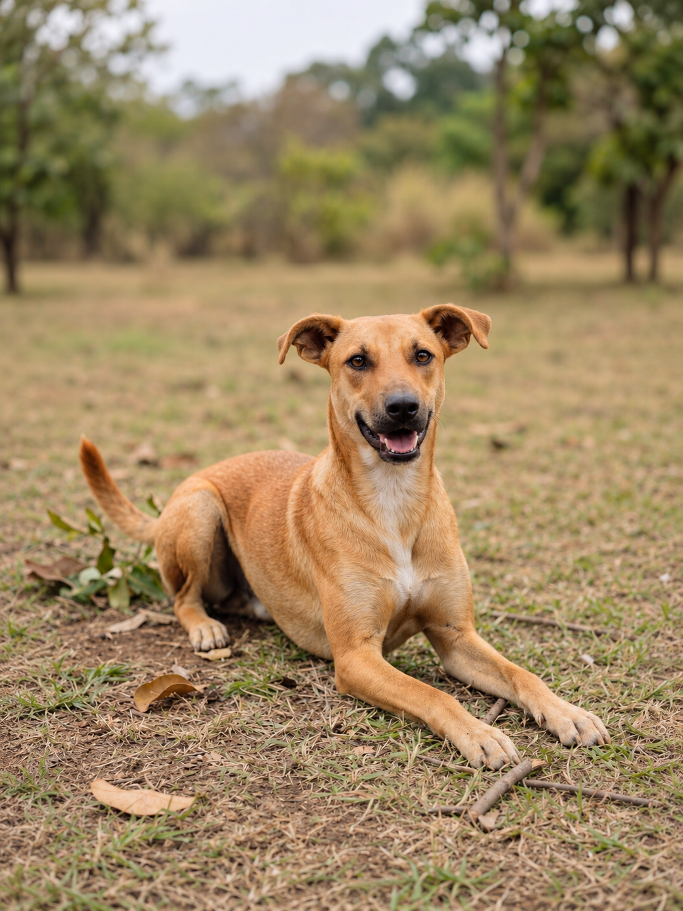
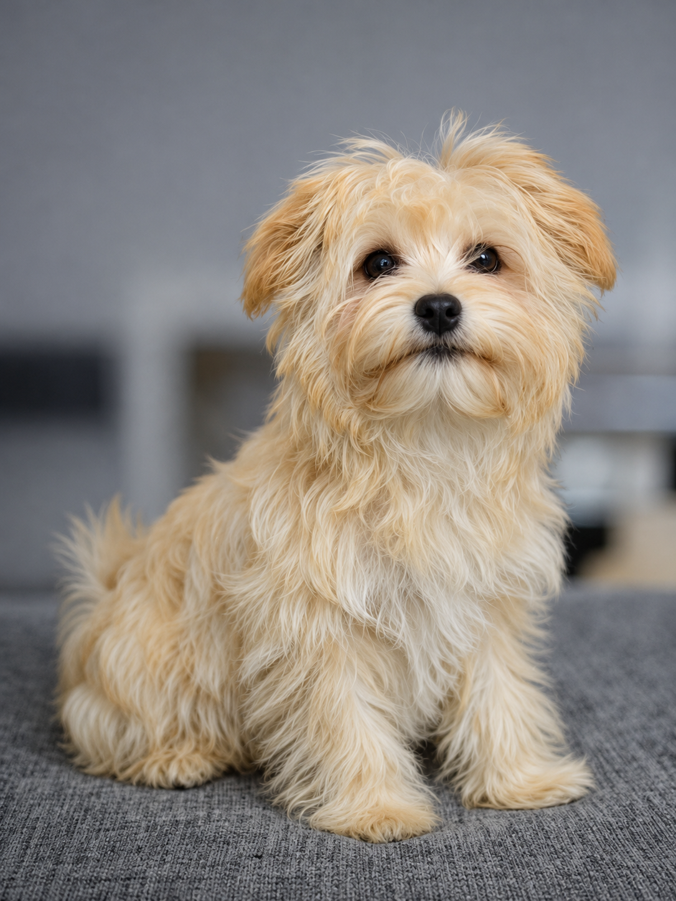
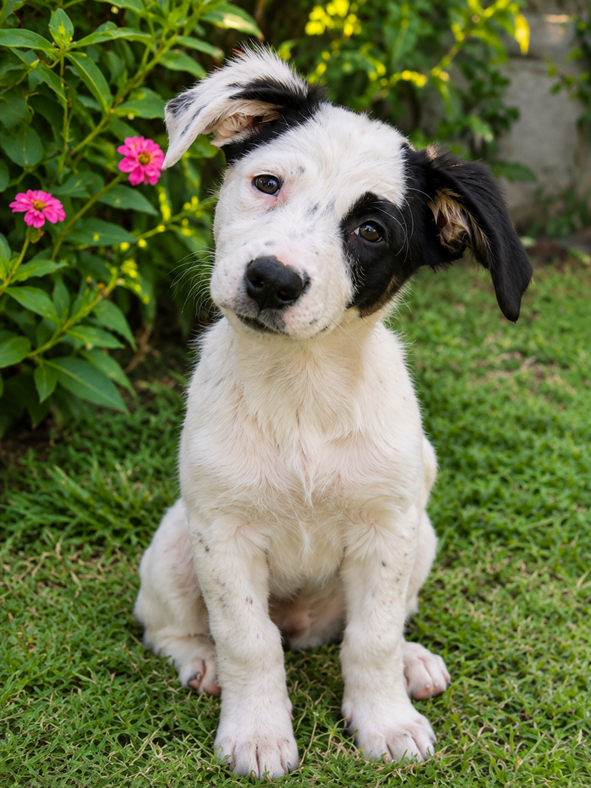
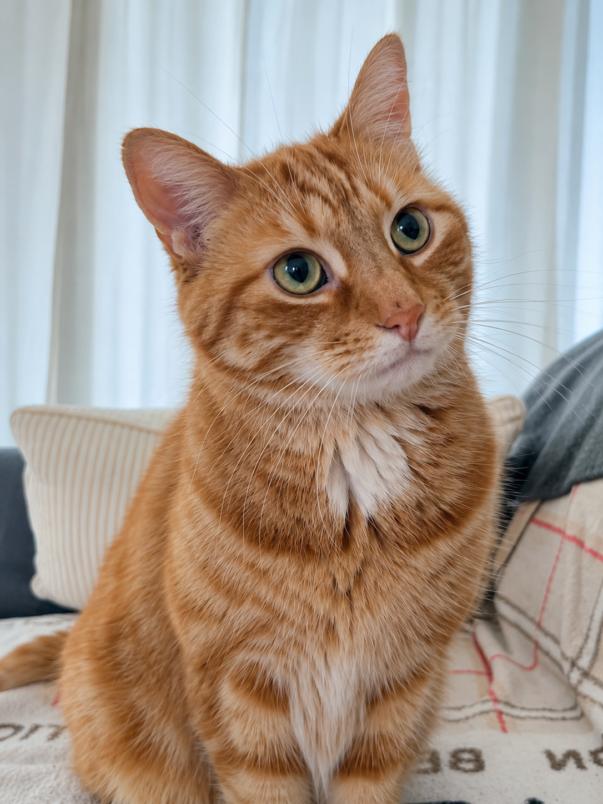
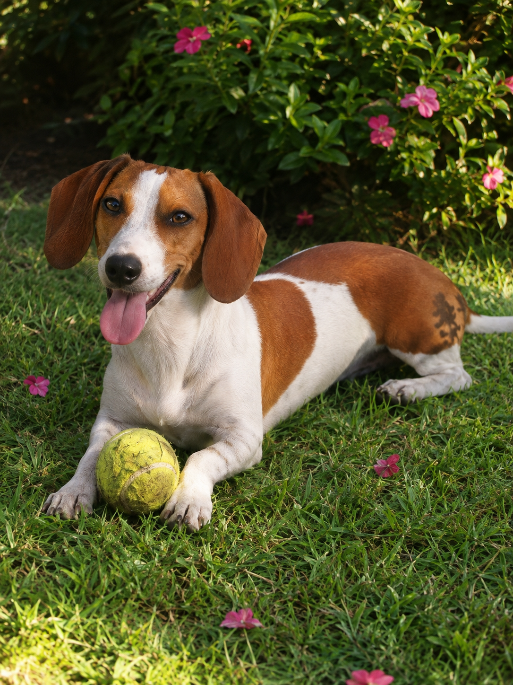

DisponiblePequeñas historias, grandes oportunidades
Encuentra a tu compañero ideal ♡
Conoce a los perros y gatos que esperan una segunda oportunidad. Tal vez tu nuevo mejor amigo esté aquí.
Mascotas que buscan un hogar
Conoce a nuestros seis compañeros de ejemplo.
 Disponible
Disponible

Disponible
Disponible
Disponible
DisponibleNo encontramos mascotas con esos filtros. Intenta seleccionar otras características. ♡
Las mascotas, sus ubicaciones y características son datos de ejemplo para el prototipo académico de PetMatch CR.